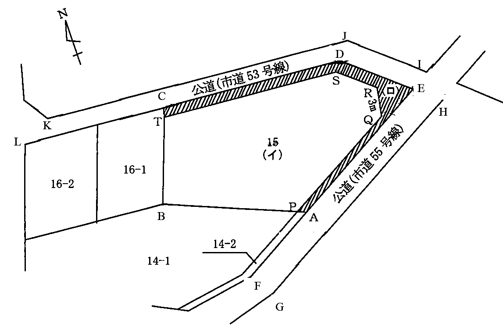
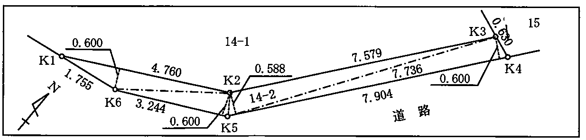
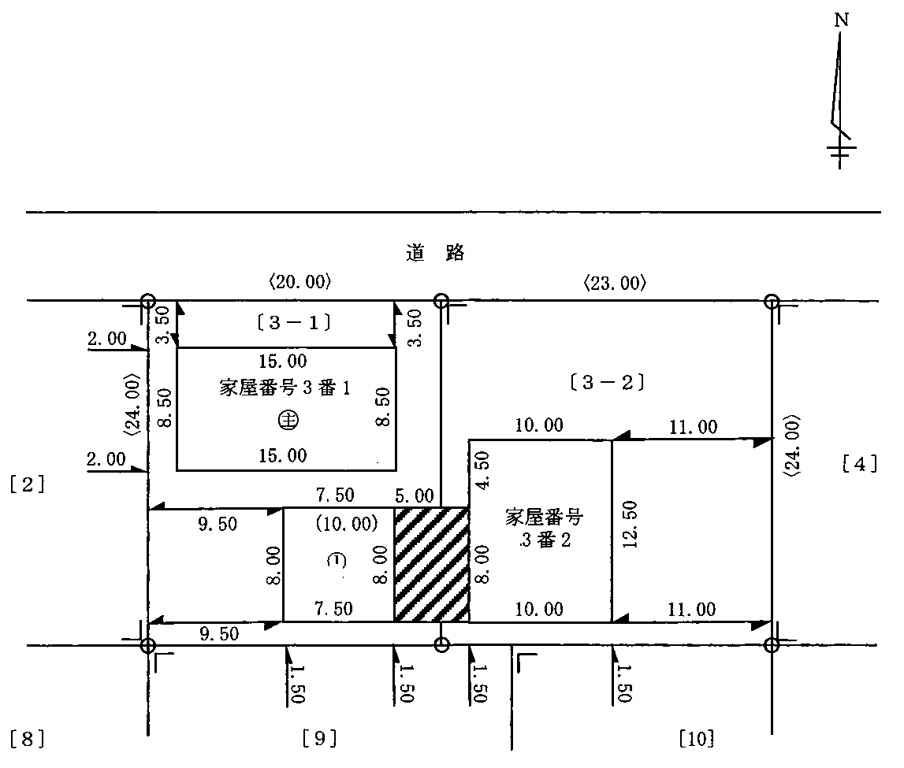
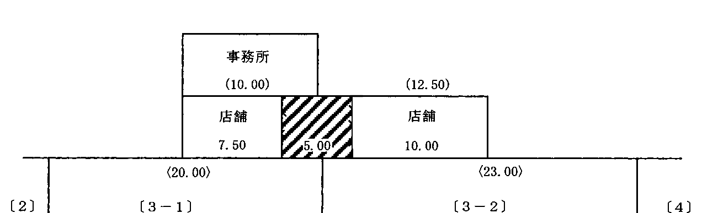

多肢択一式（第1問〜第20問）
第1問
Aは，Bから，B所有の甲土地を売却することについての代理権の授与を受け，Cとの間で，甲土地を1億円で売り渡す旨の売買契約（以下「本件契約」という。）を締結した。この場合に関する次の1から5までの記述のうち，判例の趣旨に照らし正しいものはどれか。
- 1Bの代理人として本件契約を締結したAが未成年者であった場合，Bは，代理権を授与した時にAが未成年であったことを知らなかったときは，本件契約を取り消すことができる。
- 2Aが，Bの代理人であることを示さずに，B本人であると名乗って本件契約を締結した場合，AをB本人であると過失なく信じたCは，本件契約を取り消すことができる。
- 3Aが，Bから授与された代理権が消滅した後に，Bの代理人として本件契約を締結した場合，Bは，Cが代理権の消滅を過失なく知らなかったとしても，Cからの本件契約の履行請求を拒絶することができる。
- 4Aが甲土地の代金を着服する意図を持ってBの代理人として本件契約を締結し，その代金を自ら費消した場合，Bは，CがAの意図を本件契約締結時に過失なく知らなかったとしても，Cに対し，本件契約の無効を主張することができる。
- 5Cが，Bから虚偽の事実を告げられたために，実際には3,000万円足らずの甲土地の地価を1億円は下らないと誤信して本件契約を締結した場合，Cは，Bの代理人として本件契約を締結したAがBの欺罔行為を過失なく知らなかったとしても，本件契約を取り消すことができる。
第2問
次の対話は，建物に関する教授と学生との対話である。教授の質問に対する次のアからオまでの学生の解答のうち，判例の趣旨に照らし誤っているものの組合せは，後記1から5までのうちどれか。
教授： 物には不動産と動産とがありますが，建築中の建物は，どのように扱われますか。学生：ア 土地の定着物ですから不動産に当たりますが，基礎工事の段階では土地の一部と扱われるのに対し，屋根や壁ができて建物とみられる段階に至ると，土地とは別の不動産と扱われます。教授： 一棟の建物の一部について取得時効は成立しますか。学生：イ 一筆の土地の一部について取得時効の成立が認められるのと同様に，一棟の建物の一部についても，その部分が区分建物としての独立性を備えているか否かにかかわらず，取得時効の成立が認められます。教授： 賃貸物件として使用されている建物に抵当権が設定された場合，抵当権者は，建物の賃料から優先弁済を受けることができますか。学生：ウ 賃料債権も物上代位の対象になりますから，抵当権者は，被担保債権の債務不履行後に，賃料債権に対する物上代位権を行使することによって賃料から優先弁済を受けることができます。教授： 借地上の建物に設定されていた抵当権が実行されて，買受人が建物の所有権を取得した場合，借地権はどうなりますか。学生：エ 借地権は建物の所有権とは別個の権利ですので，借地権は買受人に移転しません。教授： 建物の所有者が移築を目的として当該建物を解体した場合には，その建物に設定されていた抵当権はどうなりますか。学生：オ 解体された建物は不動産ではなくなりますから，当該建物に設定されていた抵当権は消滅することになります。
1 アイ2 アオ3 イエ4 ウエ5 ウオ
第3問
相続が関係する物権変動に関する次のアからオまでの記述のうち，判例の趣旨に照らし正しいものの組合せは，後記1から5までのうちどれか（なお，DはBに対する関係で背信的悪意者に当たらないものとする。）。
- アAがその所有する土地をBに譲渡したが，その旨の登記をしないまま死亡し，Aを相続したCがその土地について相続登記をしてこれをDに譲渡し，その旨を登記した場合，Bは，Dに対し，土地所有権の取得を対抗することができる。
- イAが死亡し，BとCがAを共同相続したが，Cが，Aの所有していた土地について，勝手に，Cが単独で取得する旨の相続登記をしてこれをDに譲渡し，その旨の登記をした場合，Bは，Dに対し，相続分に応じた土地持分の取得を対抗することができる。
- ウAが死亡した後，その法定相続人であるBとCのうちCが適法に相続を放棄したが，Aの所有していた土地について，この放棄を前提とする相続登記がされる前に，Cの債権者Dが代位によりBとCを共同相続人とする相続登記をし，C名義の土地持分を差し押さえた場合，Bは，Dに対し，当該土地持分の取得を対抗することができる。
- エAがその所有する土地をBに遺贈する旨の遺言をした後に死亡したが，Bがこれに基づく登記をしない間に，Aを相続したCの債権者Dが代位によりその土地について相続登記をしてこれを差し押さえた場合，Bは，Dに対し，土地所有権の取得を対抗することができる。
- オAが死亡し，その共同相続人であるBとCとの間でAの所有していた土地をBが単独で相続する旨の遺産分割協議が成立したが，その土地について，Bが遺産分割協議を前提とする相続登記をする前に，CがBとCを共同相続人とする相続登記をし，C名義の土地持分をDに譲渡し，その旨の登記をした場合，Bは，Dに対し，当該土地持分の取得を対抗することができる。
1 アエ2 アオ3 イウ4 イオ5 ウエ
第4問
建物の表題登記の申請に関する次のアからオまでの記述のうち，正しいものの組合せは，後記1から5までのうちどれか。
- ア2個の附属建物がある建物の表題登記を申請するときに添付情報として提供すべき建物図面及び各階平面図は，附属建物1個と主である建物の組合せごとに作成しなければならない。
- イAが，自ら所有する区分建物以外の建物を，新築後直ちに，未登記のままBに売り渡した場合，Bは，新築後1月以内に，当該建物について表題登記を申請しなければならない。
- ウ登記記録上の地目が宅地以外のものである土地を敷地とする建物については，表題登記を申請することができない。
- エ建物を解体した後，当該建物の材料を用いて別の敷地に従前の建物と種類及び構造が同一の建物を再築した場合は，従前の建物についての滅失の登記及び再築した建物についての表題登記を申請しなければならない。
- オ共有に属する建物についての表題登記を申請する場合には，各共有者ごとの持分を申請情報の内容としなければならないが，共有者全員で申請することを要しない。
1 アイ2 アウ3 イエ4 ウオ5 エオ
第5問
区分建物についての表示に関する登記に関する次のアからオまでの記述のうち，誤っているものの組合せは，後記1から5までのうちどれか。
- ア団地共用部分である旨の登記がある建物について建物の区分の登記を申請するときは，添付情報として，当該建物の所有者を証する情報を提供しなければならない。
- イ区分建物を新築し，その所有権の原始取得者となったA会社が，当該区分建物の表題登記を申請しない間にB会社に吸収合併された場合には，B会社は，B会社を表題部所有者とする当該区分建物についての表題登記を申請しなければならない。
- ウ団地共用部分である旨の登記を申請する場合において，当該団地共用部分である建物に抵当権の設定の登記があるときは，添付情報として，当該抵当権の登記名義人の承諾を証する当該登記名義人が作成した情報又は当該登記名義人に対抗することができる裁判があったことを証する情報を提供しなければならない。
- エ区分建物が属する一棟の建物が新築された場合における当該区分建物についての表題登記の申請は，当該区分建物が敷地権のない区分建物であるときは，当該新築された一棟の建物に属する他の区分建物についての表題登記の申請と併せてすることを要しない。
- オ区分所有者が建物及び建物が所在する土地と一体として使用する庭を建物の敷地とする規約を設定したことにより敷地権が生じたことを原因とする建物の表題部の変更の登記を申請する場合において，当該敷地権の目的である土地が他の登記所の管轄区域内にあるときは，添付情報として，当該土地の登記事項証明書を提供しなければならない。
1 アイ2 アウ3 イエ4 ウオ5 エオ
第6問
附属建物に関する次のアからオまでの記述のうち，正しいものの組合せは，後記1から5までのうちどれか。
- ア既登記の甲建物が，所有権の登記名義人が同一である既登記の乙建物に附属して一体として利用されているときは，甲建物と乙建物が国道を隔てている場合であっても，外に合併の登記の制限事由がない限り，甲建物を乙建物の附属建物とする建物の合併の登記をすることができる。
- イ附属建物の新築を原因とする建物の表題部の変更の登記を申請する場合に添付情報として提供すべき建物図面には，当該附属建物だけでなく，既登記の主である建物及び他の附属建物も表示しなければならない。
- ウ抵当権の設定の登記がある既登記の建物の附属建物を取り壊したことを原因とする建物の表題部の変更の登記を申請するときは，添付情報として，当該抵当権の登記名義人が承諾したことを証する当該登記名義人が作成した情報又は当該登記名義人に対抗することができる裁判があったことを証する情報を提供しなければならない。
- エ既登記の甲建物に附属して一体として利用されている未登記の乙建物が甲建物の建築日より前に建築されたものであるときは，附属建物を新築したことを原因とする甲建物の表題部の変更の登記をすることによって乙建物を甲建物の附属建物とすることはできない。
- オ甲登記所の管轄区域内にある主である建物と附属建物から成る1個の建物のうち主である建物のみを乙登記所の管轄区域内にえい行移転した場合の当該1個の建物の管轄登記所は，甲登記所である。
1 アイ2 アオ3 イウ4 ウエ5 エオ
第7問
次のアからコまでの土地のうち，宅地と認定すべきものと雑種地と認定すべきものの個数の組合せとして正しいものは，後記1から5までのうちどれか。
- ア競馬場内にある一筆の土地が永久的設備と認められる建物の敷地として利用されている場合における当該土地
- イ宗教法人である寺院の境内にある庫裏の敷地
- ウガスタンク敷地
- エ水力発電のためのダム貯水池用地
- オ住居として使用されている建物の敷地内に設けられた屋外プールの敷地
- カ鉄道のガード下を利用して築造された店舗の敷地
- キ海産物加工場と道を隔てた向かい側にあり，日干場として利用されている土地
- ク中学校の校舎の敷地
- ケ高圧線下にある建物の敷地
- コ木場の区域内にある一筆の土地が材木問屋の建物の敷地として利用されている場合における当該土地
1 宅地3個：雑種地1個2 宅地3個：雑種地2個3 宅地4個：雑種地1個4 宅地4個：雑種地2個5 宅地5個：雑種地1個
第8問
代位による登記の申請に関する次の1から5までの記述のうち，誤っているものはどれか。
- 1土地区画整理事業を施行する者は，土地区画整理事業の施行のために必要があるときは，所有者に代位して，土地の分筆の登記を申請することができる。
- 2Aが所有し，かつ所有権の登記名義人である甲土地をAから賃借したBが，Aの承諾を得て甲土地の一部をCに転貸したときは，Cは，A及びBに代位して，甲土地から転借した部分を分筆する登記を申請することができる。
- 3甲土地についてAからBへの所有権の移転の登記がされ，さらに，甲土地と乙土地との合筆の登記がされた後，当該所有権の移転の登記の抹消登記手続を命ずる判決があったときは，Aは，Bに代位して，当該合筆の登記の抹消を申請することができる。
- 4Aが所有権の登記名義人である区分建物でない甲建物に接続してBが所有する区分建物が新築されたことにより，甲建物が区分建物になった場合，Bは，Aに代位して，甲建物について，これを区分建物とする表題部の変更の登記を申請することができる。
- 5Aが所有し，かつ所有権の登記名義人である甲土地の一部を買い受けたBが，当該部分にCを抵当権者とする抵当権を設定したときは，Cは，A及びBに代位して，甲土地から抵当権が設定された部分を分筆する登記を申請することができる。
第9問
次の対話は，地積測量図に関する教授と学生との対話である。教授の質問に対する次のアからオまでの学生の解答のうち，正しいものは幾つあるか。
教授： 土地の表示に関する登記の申請において，地積測量図を添付情報として提供しなければならないのはどのような場合ですか。学生：ア 土地の表題登記，地積に関する変更の登記若しくは更正の登記又は分筆の登記を申請する場合に添付情報として提供します。教授： 地積測量図に記録する筆界点の座標値は，どのような測量の成果によらなければなりませんか。学生：イ 近傍の恒久的な地物に基づく測量の成果による必要があります。教授： では，筆界点に境界標がある場合，その境界標の表示は，地積測量図にどのように記録する必要がありますか。学生：ウ 境界標の存する筆界点に符号を付し，適宜の箇所にその符号及び境界標の種類を記録する方法その他これに準ずる方法によります。教授： 分筆の登記を申請する場合に提出する地積測量図には，分筆後のすべての土地について，地積及びその求積方法，筆界点間の距離並びに筆界点の座標値を記録する必要がありますか。学生：エ 地積及びその求積方法，筆界点間の距離並びに筆界点の座標値は，分筆前の土地が広大な土地であって分筆後の土地の一方がわずかであるなど特別の事情がある場合を除いて，分筆後のすべての土地について記録しなければなりません。教授： 既に登記所に備え付けられている地積測量図に誤りがあるとき，表題部所有者又は所有権の登記名義人はどのような手続をすることができますか。学生：オ 地積測量図を添付情報とする表題部の登記事項に関する更正の登記をすることができる場合を除き，地積測量図の訂正の申出をすることができます。
1 1個2 2個3 3個4 4個5 5個
第10問
不動産の表示に関する登記の申請代理人に関する次のアからオまでの記述のうち，正しいものの組合せは，後記1から5までのうちどれか。
- ア本人から委任を受けた後，登記の申請前に本人が後見開始の審判を受けたときは，申請代理権は消滅しないが，登記の申請をするには，後見人の承諾を得なければならない。
- イ委任による代理人が本人の同意を得て復代理人を選任したときは，代理人は，復代理人の行為について責任を負うことはない。
- ウ本人から委任を受けた後，登記の申請前に本人が死亡した場合でも，申請代理権は消滅しない。
- エ本人の法定代理人は，本人の同意なくして復代理人を選任することができるが，やむを得ない事由があるときを除き，その責任は選任及び監督の範囲に限られる。
- オ同一の申請について複数の代理人が選任されている場合，共同代理の定めがない限り，各代理人は単独で申請を代理することができる。
1 アイ2 アウ3 イエ4 ウオ5 エオ
第11問
建物の表示に関する登記の申請における添付情報に関する次のアからオまでの記述のうち，誤っているものの組合せは，後記1から5までのうちどれか。
- ア附属建物が新築されたことを原因として建物の表題部の変更の登記を申請するときは，添付情報として，表題部所有者又は所有権の登記名義人が附属建物の所有権を有することを証する情報を提供しなければならない。
- イ共用部分である旨の登記がある建物について共用部分である旨を定めた規約を廃止したことを原因として当該建物の表題登記を申請するときは，添付情報として，表題部所有者となる者が当該建物の所有権を有することを証する情報を提供しなければならない。
- ウ建物の分割の登記を申請するときは，添付情報として，分割後の建物の表題部所有者となる者又は所有権の登記名義人となる者が当該建物の所有権を有することを証する情報を提供しなければならない。
- エ共用部分である旨の登記を申請するときは，添付情報として，当該共用部分である建物の所有者を証する情報を提供しなければならない。
- オ未登記の建物と所有権の登記がある建物とが合体した場合にする合体による登記等を申請するときは，添付情報として，表題部所有者となる者が合体後の建物の所有権を有することを証する情報を提供しなければならない。
1 アウ2 アオ3 イエ4 イオ5 ウエ
第12問
所有者が同一である甲建物と乙建物についての建物の合併の登記に関する次のアからオまでの記述のうち，正しいものは幾つあるか。
- ア甲建物については所有権の登記があり，乙建物については表題登記のみがあるときは，甲建物と乙建物との建物の合併の登記は，することができない。
- イ甲建物と乙建物がいずれも区分建物であるときは，両建物が互いに接続していなければ，甲建物を乙建物の附属建物とする建物の合併の登記をすることはできない。
- ウ甲建物については所有権の登記以外の権利に関する登記はないが，乙建物については抵当権の設定の登記があるときは，当該抵当権の登記名義人が抵当権を消滅させることを承諾したことを証する情報を添付すれば，甲建物と乙建物との建物の合併の登記を申請することができる。
- エ共有者及び共有持分が同一である甲建物と乙建物との建物の合併の登記は，共有者の1人が，単独で申請することができる。
- オ甲建物と乙建物のいずれにも共用部分である旨の登記がある場合であっても，両建物が同じ一棟の建物の共用部分であるときは，甲建物と乙建物との建物の合併の登記をすることができる。
1 1個2 2個3 3個4 4個5 5個
第13問
所有権の登記名義人並びに現況及び登記記録上の地目がいずれも同一である甲土地と乙土地との合筆の登記に関する次の1から5までの記述のうち，正しいものはどれか。
- 1甲土地と乙土地とが地図に準ずる図面上相互に接続しているときは，現地においてその所在を確認することができなくても，甲土地と乙土地との合筆の登記をすることができる。
- 2甲土地及び乙土地のいずれについても買戻しの特約の登記があるが，いずれも買戻しの期間が満了しているときは，甲土地と乙土地との合筆の登記をすることができる。
- 3甲土地に要役地を丙土地とする地役権の登記があり，乙土地に要役地を丁土地とする地役権の登記がある場合でも，甲土地と乙土地との合筆の登記をすることができる。
- 4同一の債権を被担保債権とする抵当権の設定の登記がある甲土地及び乙土地については，その登記の申請の受付の年月日が異なっていても，合筆の登記をすることができる。
- 5甲土地に甲土地の所有者が所有する住宅用建物があり，登記のない賃借権が設定されている乙土地に賃借人が所有する店舗用建物があるときは，甲土地と乙土地との合筆の登記は，することができない。
第14問
分筆の登記に関する次のアからオまでの記述のうち，誤っているものの組合せは，後記1から5までのうちどれか。
- ア甲土地の所有権の登記名義人であるAが死亡し，B，C及びDがAを相続した場合において，甲土地を（イ）部分及び（ロ）部分に分筆し，（イ）部分をBが，（ロ）部分をCが相続する旨の遺産分割協議が成立したときは，B及びCは，（イ）部分及び（ロ）部分を表示した図面が添付された遺産分割協議書を添付情報として提供して，甲土地を（イ）部分と（ロ）部分に分筆する分筆の登記を申請することができる。
- イ地役権の登記がある承役地の分筆の登記を申請する場合において，地役権設定の範囲が分筆後の土地の一部であるときは，添付情報として，当該地役権設定の範囲を証する地役権者が作成した情報又は当該地役権者に対抗することができる裁判があったことを証する情報を提供しなければならない。
- ウ甲土地を（イ）部分及び（ロ）部分に分筆する場合において，分筆前の甲土地の登記簿上の地積と，分筆後の（イ）部分及び（ロ）部分を測量して得られた地積の合計との差が，分筆前の地積を基準にして地積測量図の誤差の限度内であるときは地積に関する更正の登記をせずに分筆の登記を申請することができる。
- エ甲土地の所有権の登記名義人であるAが，Aの死亡による相続の開始から5年間遺産の分割を禁止する旨の遺言をして死亡した場合，Aの相続人は，その期間内は，甲土地の分筆の登記を申請することができない。
- オ甲土地の所有権の登記名義人であるAから売買により甲土地の全部の所有権を取得したBは，所有権の移転の登記をする前であっても，Aに代位して，甲土地の分筆の登記を申請することができる。
1 アイ2 アオ3 イウ4 ウエ5 エオ
第15問
登記識別情報に関する次のアからオまでの記述のうち，正しいものは幾つあるか。
- ア登記識別情報を亡失した場合には，当該登記識別情報の再通知を申請することができる。
- イ所有権の登記名義人が持分を各2分の1とするA及びBである土地の合筆の登記の申請については，A又はBのいずれか1人の登記識別情報を提供すれば足り，他方の登記識別情報を提供することを要しない。
- ウ所有権の登記がある土地の合筆の登記の申請については，当該合筆に係る土地のうちいずれか一筆の土地の所有権の登記名義人の登記識別情報を提供すれば足り，他の土地の所有権の登記名義人の登記識別情報を提供することを要しない。
- エ所有権の登記がある土地の合筆の登記を申請する場合において，正当な理由により登記識別情報を提供することができないときは，登記官から登記名義人に対し，当該申請があった旨及び当該申請の内容が真実であると思料するときは一定期間内にその旨の申出をすべき旨が通知される。
- オ所有権の登記名義人が3人である一筆の土地を三筆に分筆する分筆の登記がされたときは，登記識別情報は，合計9通通知されることとなる。
1 1個2 2個3 3個4 4個5 5個
第16問
次の対話は，資格者代理人による本人確認情報の提供に関する教授と学生との対話である。教授の質問に対する次のアからオまでの学生の解答のうち，誤っているものの組合せは，後記1から5までのうちどれか。
教授： 資格者代理人が申請人と面識がない場合，本人確認情報は，どのように作成する必要がありますか。学生：ア 運転免許証等の書類の提示を受けて申請人が申請の権限を有する登記名義人であることを確認した上，当該書類の内容及び当該申請人が申請の権限を有する登記名義人であると認めた理由を明らかにしなければなりません。教授： 1か月前に登記の申請を代理したことにより，氏名及び住所を知り，かつ，面識を得た者から，再び登記の申請の代理を依頼され，本人確認情報を作成するときは，どのようにする必要がありますか。学生：イ その場合は，資格者代理人が申請人の氏名を知り，かつ，当該申請人と面識があるときに当たりますから，運転免許証等による確認は必要ありませんが，当該申請人の氏名を知り，かつ，当該申請人と面識がある旨及びその面識が生じた経緯を明らかにしなければなりません。教授： ほかに，本人確認情報において明らかにしなければならない事項はありますか。学生：ウ 資格者代理人が申請人と面談した日時，場所及びその状況を明らかにしなければなりません。教授： 本人確認情報を提供するときに，併せて提供しなければならない情報はありますか。学生：エ 本人確認情報を提供する資格者代理人が登記の申請の代理を業とすることができる者であることを証する情報を提供しなければなりません。例えば，所属する土地家屋調査士会が発行した職印に関する証明書がこれに当たります。教授： 登記の申請の代理を受任した土地家屋調査士は，申請人と面識のある他の土地家屋調査士が作成した本人確認情報を提供して申請することはできますか。学生：オ 土地家屋調査士が作成した本人確認情報は一般に信頼性が高いと考えられますから，土地家屋調査士は，他の土地家屋調査士が作成した本人確認情報を添付して申請することができます。
1 アウ2 アエ3 イエ4 イオ5 ウオ
第17問
不動産登記法第14条第1項に規定する地図又は建物所在図に関する次の1から5までのうち，誤っているものはどれか。
- 1地図に準ずる図面として登記所に備え付けられた図面が，修正により地図としての要件を満たすこととなったときは，地図として備え付けられる。
- 2地図が電磁的記録に記録されたときは，従前の地図は，閉鎖される。
- 3建物所在図は，地図と建物図面を用いるほか，地図に準ずる図面と建物図面を用いて作成することができる。
- 4地図に表示された土地の地番に誤りがある場合において，当該土地が所有権の登記がある土地であるときは，当該土地の所有権の登記名義人又はその相続人その他の一般承継人は，その訂正の申出をすることができる。
- 5建物所在図に記録する建物が区分建物であるときは，建物所在図に，当該区分建物が属する一棟の建物の位置を記録しなければならない。
第18問
合体による登記等に関する次の1から5までの記述のうち，誤っているものはどれか。
- 1合体前の建物の所有権の登記名義人が既に死亡している場合でも，相続人のうちの1人は，単独で，被相続人名義のまま，合体による登記等を申請することができる。
- 2合体前の建物の所有権の登記名義人の住所に変更があった場合でも，変更があったことを証する情報を添付情報として提供することにより，所有権の登記名義人の住所についての変更の登記をすることなく，合体による登記等を申請することができる。
- 3合体後の建物の持分の上に存続する抵当権の登記について抵当証券の所持人又は裏書人があるときは，添付情報として，合体後の建物の持分を定めることについてその者が承諾したことを証する情報又はその者に対抗することができる裁判があったことを証する情報及び当該抵当証券を提供しなければならない。
- 42以上の建物が合体して1個の建物となったときは，合体前の建物の一方が工場財団の組成物件となっている場合でも，合体による登記等を申請しなければならない。
- 5合体前のいずれの建物にも同一の賃借権の設定の登記がされている場合には，合体後の建物につき存続すべきものの表示として，当該賃借権の表示を申請情報の内容としなければならない。
第19問
区分建物の敷地に関する次のアからオまでの記述のうち，正しいものの組合せは，後記1から5までのうちどれか。
- ア敷地権付き区分建物の表題登記を申請するときは，敷地権の目的となる土地の不動産所在事項，地目及び地積並びに敷地権の種類及び割合を申請情報の内容としなければならないが，敷地権の登記原因及びその日付は，申請情報の内容とすることを要しない。
- イ区分建物の表題登記を申請する場合において，当該区分建物が属する一棟の建物の敷地について登記された所有権の登記名義人が当該区分建物の所有者であり，かつ，当該所有権が当該区分建物の敷地権とならないときは，添付情報として，敷地権とならない事由を証する情報を提供しなければならない。
- ウ区分建物の表題登記がされた後に敷地権が生じたときは，当該区分建物の表題部所有者又は所有権の登記名義人は，建物の表題部の変更の登記を申請しなければならない。
- エ区分建物の表題登記がされた後，最初に建物の専有部分の全部を所有する者が単独で規約敷地を定める規約を設定したことにより敷地権が生じた場合において，敷地権の発生を原因とする建物の表題部の変更の登記を申請するときは，添付情報として，当該規約を設定したことを証する情報を提供しなければならないが，当該情報は，公正証書に記録されていることを要しない。
- オある一棟の建物の法定敷地となっている土地を，重ねて他の一棟の建物の規約敷地とすることはできない。
1 アエ2 アオ3 イウ4 イエ5 ウオ
第20問
土地家屋調査士法人に関する次の1から5までの記述のうち，正しいものはどれか。
- 1土地家屋調査士法人を設立するには法務大臣の許可を得なければならず，土地家屋調査士法人は，この許可を得たときに成立する。
- 2定款の定めにより，土地家屋調査士法人の社員の一部のみが業務執行の権利を有し，他の社員は業務執行の権利を有しないこととすることができる。
- 3土地家屋調査士法人は，成立したときは，成立の日から2週間以内に，その旨を，その主たる事務所の所在地を管轄する法務局又は地方法務局に届け出なければならない。
- 4土地家屋調査士法人の社員は，総社員の同意があるときであっても，自己又は第三者のためにその土地家屋調査士法人の業務の範囲に属する業務を行ってはならない。
- 5土地家屋調査士法人が土地家屋調査士法又は同法に基づく命令に違反した場合，その社員である土地家屋調査士は懲戒処分の対象となるが，土地家屋調査士法人は懲戒処分の対象とならない。
第21問（土地）
第21問A市B町二丁目6番地7に事務所を有する土地家屋調査士甲野太郎が，下記見取図で示すC市D町三丁目15番の土地（以下本問において「本件土地」という。）について，C市D町三丁目12番3号に住所を有する乙山次郎から，自己用住宅の建築敷地部分（イ）部分と道路後退部分（ロ）部分に分筆する登記及びこれとともに本件土地について必要となるすべての表示に関する登記の申請手続の代理を依頼されたものとして，後記の調査結果に基づき，別紙第21問答案用紙を用いて，後記の問いに答えなさい。
〔見取図〕

(注)見取図中，A点からL点までの各点は筆界点を，P点からT点までの各点は分割点を示し，数字は地番を，実線は筆界線を示す。A点はE点とF点を結ぶ直線上にある。
市との協議により，P点からT点までの各点を順次直線で結ぶ分筆線は前面道路中心線から2.00 m後退した線とし，P点とQ点を結ぶ直線とR点とS点を結ぶ直線の交点からR点及びQ点までの各距離は等しく，隅切りのR点とQ点の距離は3.00 mとすることとされた。
〔土地家屋調査士甲野太郎による調査の結果〕
1資料調査の結果
(1)登記所における調査の結果，本件土地及び隣接土地についての登記記録の記録（登記事項一部省略）は下記のとおりであった。
〔本件土地〕
| （表題部） | |
|---|
| C市D町三丁目15番 | 山林 200 ㎡ |
|---|
| （権利部） | |
|---|
| 甲区 2番 | 所有権移転 |
|---|
| 所有者 C市D町三丁目12番3号 乙山次郎 |
|---|
| 乙区 1番 | 抵当権設定 |
|---|
〔隣接土地〕
| （表題部） | |
|---|
| C市D町三丁目14番1 | 宅地 195.59 ㎡ |
|---|
| （権利部） | |
|---|
| 甲区 4番 | 所有権移転 |
|---|
| 所有者 C市D町三丁目14番地1 丙川花子 |
|---|
| 乙区 | 省略 |
|---|
〔隣接土地〕
| （表題部） | |
|---|
| C市D町三丁目14番2 | 公衆用道路 9.80 ㎡ |
|---|
| （権利部） | |
|---|
| 甲区 1番 | 所有権移転 |
|---|
| 所有者 C市D町三丁目14番地1 丙川花子 |
|---|
| 乙区 | 省略 |
|---|
〔隣接土地〕
| （表題部） | |
|---|
| C市D町三丁目16番1 | 雑種地 64 ㎡ |
|---|
| （権利部） | |
|---|
| 甲区 3番 | 所有権移転 |
|---|
| 所有者 E市F町一丁目5番30号 丁本五郎 |
|---|
| 乙区 | 省略 |
|---|
(2)14番2の土地については，登記所に地積測量図が備え付けられていた。
〔登記所に備え付けられている地積測量図（抜粋）平成6年5月14日作成〕

(3)本件土地の分筆後の（ロ）部分の1番抵当権が消滅することについての抵当権者の承諾書一式を依頼人から受領した。
2土地の利用状況，筆界点の状況，立会い及び測量の結果
(1)土地の利用状況
本件土地は，昭和62年10月，相続により現所有者が取得したものであり，その当時から山林のまま放置してあった。平成18年2月1日から，本件土地上の建物の建築工事が開始され，同年7月1日，工事が完成したが，建物は未登記のままである。
道路後退部分（見取図中斜線部分）は，アスファルト舗装による道路として整備済みであり，整備完了年月日は平成18年7月15日であった。
(2)筆界点の状況
本件土地と接する道路は，C市により管理されている公道であり，筆界は，F点，E点，D点，L点を順次直線で結んだ線であることが確認されている。道路対岸側の筆界は，G点，H点を結ぶ直線と，I点，J点，K点を順次直線で結んだ線であることが確認されている。これら道路の筆界線は対岸側とすべて平行であった。なお，市道53号線の幅員は1.86 m，市道55号線の幅員は2.80 mであった。
現地のB点，C点，D点，E点，F点及びG点にはコンクリート杭が，H点，I点，J点，K点及びL点には金属標が埋設されている。A点及びP点には境界標は見当たらなかった。
(3)立会い
土地家屋調査士甲野太郎は，依頼人乙山次郎並びに丙川花子及び丁本五郎に立会いを求めたところ，その結果は次のとおりであった。
依頼人乙山次郎及び丁本五郎は「B点及びC点に古い境界標があり，杭に損傷もなく，移動した形跡もないので，B点とC点を結ぶ直線が筆界に間違いない。」と申述した。
丙川花子は「平成6年に建物を新築するときに，A点及びB点に境界標があり，乙山次郎氏立会いのもと筆界を確認した。その際，14番の土地を分筆した際に備え付けられた地積測量図に記録されている筆界点K3（P点と同位置）に境界標を埋設したが，その後，道路整備工事の際に，A点及びK3点の境界標が亡失してしまった。」と申述し，依頼人乙山次郎もこれと同じ認識である旨を述べた。
土地家屋調査士甲野太郎は，調査及び測量の結果から，筆界について依頼人乙山次郎並びに丙川花子及び丁本五郎に説明を行い，各人から理解を得て，各筆界点に争いがない旨の確認をした。そして，筆界点A点及びP点に改めてコンクリート杭を設置した。なお，分筆点Q点からT点にもコンクリート杭を設置した。
(4)測量の結果
平成18年8月5日の実測により得られたデータは，次のとおりである。
〔測量成果〕
| 点名 | X座標 | Y座標 | 点名 | X座標 | Y座標 |
|---|
| B | 117.14 | 102.57 | H | 118.74 | 124.55 |
| C | 125.72 | 102.57 | I | 122.04 | 123.88 |
| D | 125.72 | 117.57 | J | 127.58 | 118.34 |
| E | 120.72 | 122.57 | K | 127.58 | 93.05 |
| F | 105.96 | 107.81 | L | 125.72 | 90.93 |
| G | 103.98 | 109.79 | | | |
この成果はC市基準点による座標成果である。
問1調査測量の成果により，Q点及びS点並びにP点の座標値を求め，答案用紙第1欄に記載しなさい。
問2本件土地のうち見取図（イ）部分の実測面積を座標法により計算し，答案用紙第2欄に小数点以下第2位まで記載しなさい。
問3本件土地のうち見取図（ロ）部分の実測面積を座標法により計算し，答案用紙第3欄に記載しなさい。ただし，計算値の端数処理は，登記の申請書に記載する場合の表示方法によるものとする。
問4本件土地について申請すべき登記の目的，添付情報並びに登記原因及びその日付のすべてを必要な登記の順番に従って答案用紙第4欄に記載しなさい。ただし，分筆登記を必ず申請すること。
問5問4の登記の申請のうち，分筆登記の申請において添付情報として提供すべき地積測量図を作成しなさい。
(注)1座標値は，計算結果の小数点以下第3位を四捨五入し，小数点以下第2位までとすること。
2訂正，加入又は削除をしたときは，押印や字数を記載することを要しない。
3地積測量図には，座標値から求めた筆界の辺長を，計算結果の小数点以下第3位を四捨五入し，すべて記載すること。ただし，各筆界点の座標値の表示，測地系の表示並びに地積及びその求積方法の表示の記載は，省略して差し支えない。
4本件土地（200 ㎡）の地積測定の公差は，以下のとおりである（ただし，本件土地は市街地地域に属する。）。単位：㎡
| 精度 | 甲1 | 甲2 | 甲3 | 乙1 | 乙2 | 乙3 |
|---|
| 区分 | 0.51 | 1.24 | 2.48 | 3.54 | 7.26 | 14.52 |
| 角度 | sin | cos | tan |
|---|
| 45° 0′ 0″ | 0.70711 | 0.70711 | 1.00000 |
6必要な登記の申請は，書面を提出する方法によりするものとする。
第22問（建物）
第22問A市B町3番8号に住所を有する北山太郎は，後記の登記記録の記録のとおり，土地と建物を所有している。北山太郎は，家屋番号3番1の建物のうち符号1の附属建物と家屋番号3番2の建物との間に増築工事を施して合体させ，次の見取図及び立面図のとおり工事を済ませた。
A市D町48番地2に事務所を有する土地家屋調査士森川泉（連絡先 098－＊＊＊－＊＊＊＊）が，北山太郎から，これらの建物の変更に伴い必要となるすべての表示に関する登記の申請手続の代理を依頼されたものとして，別紙第22問答案用紙を用いて，後記の問いに答えなさい。
〔見取図〕

〔立面図〕

(注)1建物の測定値は，壁の中心線からのものである。
2壁厚は，すべて20 cmである。
3敷地境界からの距離は，すべて壁の中心までのものである。
4距離の単位は，メートルである。
5〔 〕内の数字は土地の地番であり，〈 〉内の数字は筆界点間の距離である。
6（ ）内の数字は，2階部分の測定値である。
7の部分は，増築した部分である。
8見取図中，増築した部分内の点線は，2階部分を表示したものである。
9道路の幅は6.00 mである。
10すべての建物の天井高は，4 m以上である。
〔調査結果〕
1立面図のとおり，家屋番号3番1の符号1の建物は，増築工事により1階部分が事務所から店舗へと改装されており，増築部分も含め1階部分はすべて店舗として使用されていた。
2増築部分の構造は，鉄骨造陸屋根であった。
3増築及び改装工事が完了した日は，平成18年8月2日であった。
4北の方向は，敷地北側道路と直角である。
5北山太郎は，増築後の建物の持分について，合体前の建物の評価額を勘案し，家屋番号3番1の建物側を100分の67，家屋番号3番2の建物側を100分の33とすることとし，この持分割合について，根抵当権者の承諾を得た。
6登記所で調査した現在の登記記録の記録（登記事項一部省略）は，次のとおりであった。
〔家屋番号3番1の建物〕
（表題部）
| 所 在 | A市B町字C 3番地1 |
|---|
| 家屋番号 | 3番1 |
|---|
| 主である建物 | 種 類 工場 |
|---|
| 構 造 軽量鉄骨造スレートぶき平家建 |
|---|
| 床面積 127.50 ㎡ |
|---|
| 附属建物1 | 種 類 事務所 |
|---|
| 構 造 鉄骨造陸屋根2階建 |
|---|
| 床面積 1階 60.00 ㎡ 2階 80.00 ㎡ |
|---|
（権利部）
| 甲 区 1番 | A市B町3番8号 北山太郎 |
|---|
| 昭和62年4月1日第235号 |
|---|
| 乙 区 1番 | 根抵当権設定 |
|---|
| 債務者 北山太郎 |
|---|
| 根抵当権者 株式会社丸山銀行 |
|---|
| 昭和62年4月15日第312号 |
|---|
〔家屋番号3番2の建物〕
（表題部）
| 所 在 | A市B町字C 3番地2 |
|---|
| 家屋番号 | 3番2 |
|---|
| 種 類 | 店舗 |
|---|
| 構 造 | 鉄骨造陸屋根平家建 |
|---|
| 床 面 積 | 125.00 ㎡ |
|---|
（権利部）
| 甲 区 1番 | A市B町3番8号 北山太郎 |
|---|
| 平成8年4月1日第255号 |
|---|
| 乙 区 1番 | 根抵当権設定 |
|---|
| 債務者 北山太郎 |
|---|
| 根抵当権者 株式会社丸山銀行 |
|---|
| 平成8年4月15日第345号 |
|---|
〔土地〕 （記載省略）
問1本件申請に必要な申請情報を作成しなさい。ただし，必要のない申請情報の解答用紙がある場合には，登記の目的欄に「不要」と記入すること。また，登記識別情報の通知を受けることとする。
問2合体による登記等の申請において添付情報として提供すべき建物図面及び各階平面図を作成しなさい。
(注)1建物図面は500分の1，各階平面図は250分の1の縮尺にて作成すること。
2申請情報及び図面については，訂正，加入又は削除したときは，押印や字数を記載することを要しない。
3必要な登記の申請は，書面を提出する方法によりするものとする。
多肢択一式の正解
| 第1問 | 5 |
|---|
| 第2問 | 3 |
|---|
| 第3問 | 3 |
|---|
| 第4問 | 5 |
|---|
| 第5問 | 3 |
|---|
| 第6問 | 1 |
|---|
| 第7問 | 5 |
|---|
| 第8問 | 2 |
|---|
| 第9問 | 4 |
|---|
| 第10問 | 4 |
|---|
| 第11問 | 5 |
|---|
| 第12問 | 1 |
|---|
| 第13問 | 3 |
|---|
| 第14問 | 5 |
|---|
| 第15問 | 2 |
|---|
| 第16問 | 4 |
|---|
| 第17問 | 3 |
|---|
| 第18問 | 5 |
|---|
| 第19問 | 3 |
|---|
| 第20問 | 4 |
|---|
出典：「土地家屋調査士試験」（法務省）（https://www.moj.go.jp/shikaku_saiyo_index5.html）の平成18年度試験問題。手持ちの過去問を加工して作成したもので，出題当時のものと誤差があるかもしれません。法務省が作成・公表したものではありません。